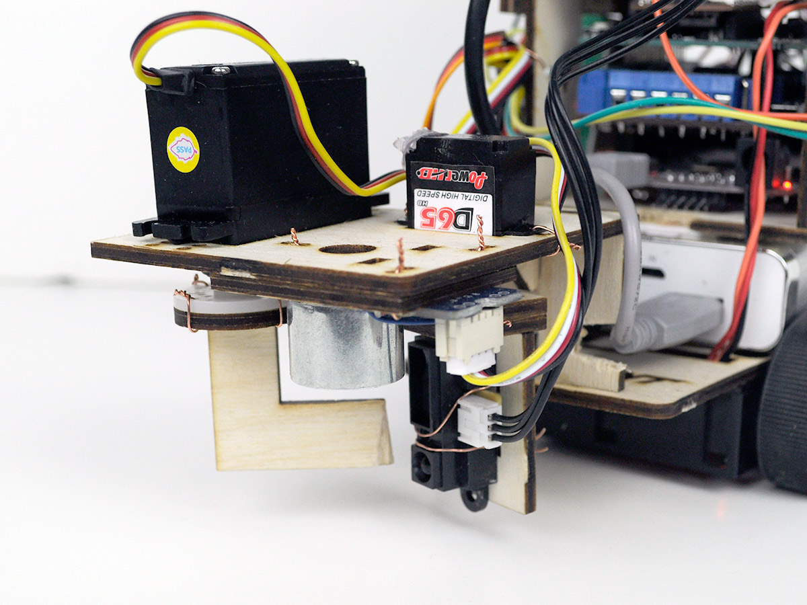

ECE 4534 – Embedded Systems Design
Problem
ECE 4534 is a capstone class that all computer engineers are required to take. It utilizes the student’s knowledge that has been obtained through classes take sophomore and junior years. In addition to a project, reports, presentations, and design documentation are to be produced. Only a handful of lectures are given and they are about how to get modules to communicate with each other and communication protocols. Other than that, the students in teams of four use their knowledge to code and design the modules with the help of GTAs and the professor.
The goal of the project assigned is to pick up all the unknown number of targets inside an unknown arena and drop them outside without bumping into obstacles or a rover. The project only allows two rovers; one that maps the arena and location of targets and obstacles and the other that is blind whose job is to pick up and drop targets. The four modules are sensor, grabber, pathfinding, and retriever; I was responsible for the grabber module.
The grabber’s task is to pick up the target and drop them when the rover is outside. The grabber module is part of the blind rover that works with the retriever module. The retriever module will move toward the targets based on the map generated by other rover that has the pathfinding and sensor modules. The grabber is disabled until the retriever says that it’s near a target. Due to friction and inaccuracy of the output compare, the position of the rover is different from where it thinks it is. The grabber can have sensors to align itself with the target because of that. After the grabber acquires the target, it is again disabled until the retriever module tells the grabber module that it’s outside the arena.
Solution
Check out our solution explained in the video and report below! My part in the video is from 9:26-14:17.
Video Report